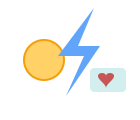
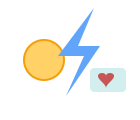

אופן שימוש
- כשאתה נכנס לשרת/עולם, יופיע לך הודעה (בעברית/באנגלית או בשפה של מיינקראפט) שמסבירה את התוסף ואת המקש להפעלה.
- לחץ על מקש המקלדת שיבליט אותך או יהפוך אותך ל־Hero Brains (ברירת מחדל:
H). המקש בר־הגדרה וניתן לשנותו בקובץ התצורה של התוסף. לחץ H כדי לעבור ל־Hero Brainsנזק מברק לא מוריד חיים בזמן מצב
לחץ H כדי לעבור ל־Hero Brainsנזק מברק לא מוריד חיים בזמן מצב לחץ לחצן ימני ביד ריקה לצורך זימון ברק
לחץ לחצן ימני ביד ריקה לצורך זימון ברק - לאחר שהפכת ל־Hero Brains, ניתן:
- לקבל מכה של ברק — הברק פוגע, אבל לא מוריד ממך חיים (אפשר לשמור השפעות אחרות כמו התבטלות אש או אפקטים לפי ההגדרות).
- לייצר ברק באופן פעיל — לחץ לחצן ימני בעכבר (right-click) כאשר אינך מחזיק בלוק כדי לזמן ברק במקום המטרה.